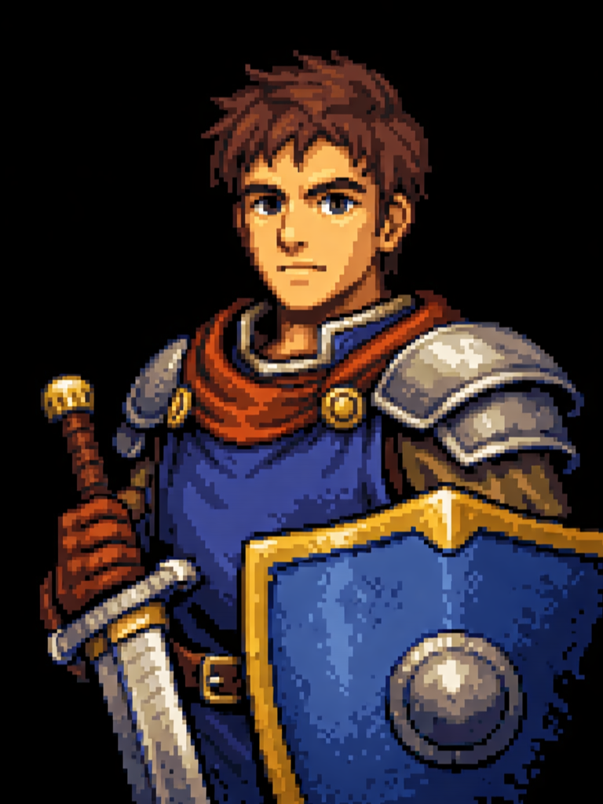

Six placements of one agent face, sharing one expression state. Switch expression and watch which layouts actually carry it. Kodama is drawn, so its expressions really change; Portrait and Photo are the shipped assets with no per-expression art — that mode shows exactly how weak the CSS-only fallback is, which is the honest baseline.
Anchored to the composer row — where your eye already is while typing. Never moves, no frame, no header row (the name lives in the tooltip). Shrinks as the transcript grows: 104 → 64 → 40px.
overflow:hidden; needs a dock wrapperMessages' thread photo, enlarged and breaking the boundary so it reads as a being behind the panel rather than a card inside it. Furthest from the composer, so the face and the words you type are two separate glances.
The face is inside the panel at 190px but pushed into the background with a mask and a scrim. Most atmospheric; the emotion is peripheral rather than looked-at.
At rest the face is a 44px cap inside the collapsed pill — so the agent has a face before you say anything (this is where a persisted mood would show). Engage and the same node grows to 92px and steps outside the panel. Try empty → short → long.
168px, living on the desktop, independent of the chat. The panel stays pure text. A small bubble carries the newest line when she speaks (visible while play a reply runs, or in empty).
Keep today's 30px chip and let the panel express: expression drives the hue and intensity of the presence glow you already ship. Included as the baseline to beat — it is nearly free, and works in every surface at any size.
.frn-omnibar::after